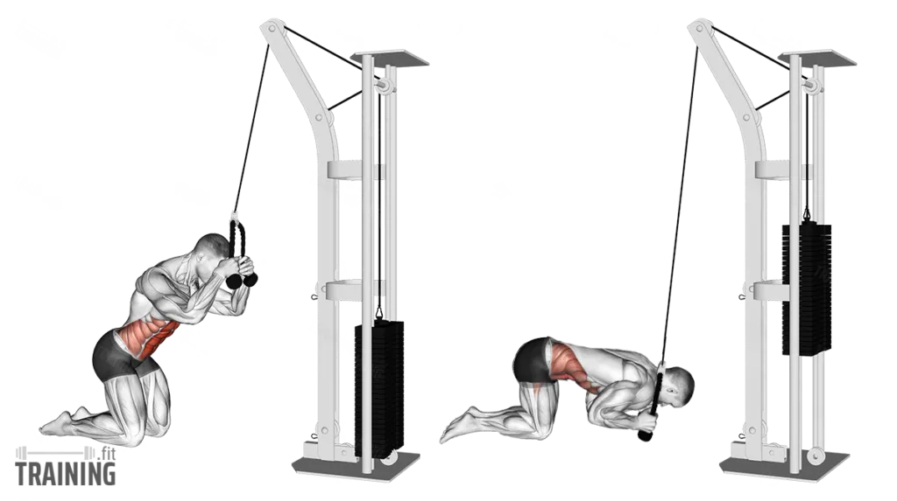
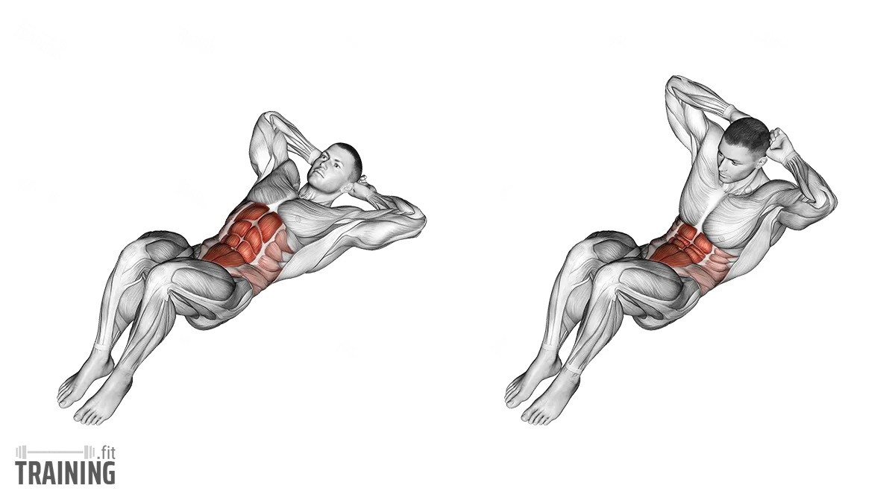
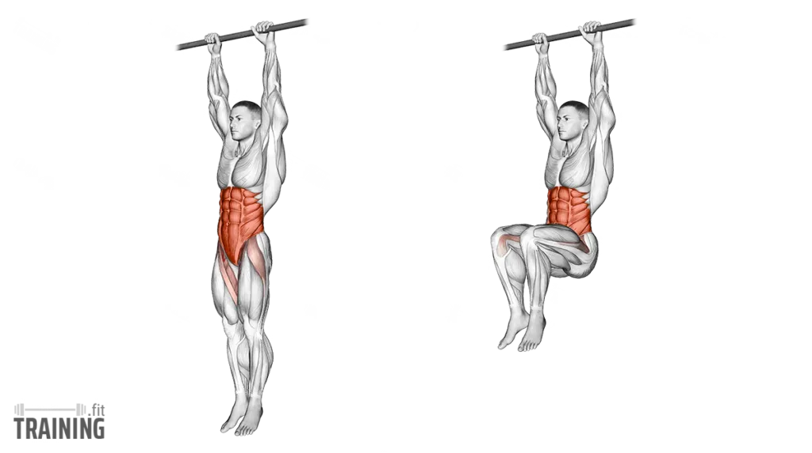
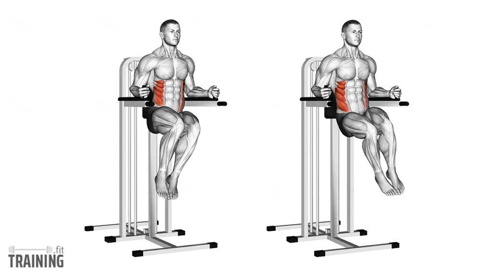
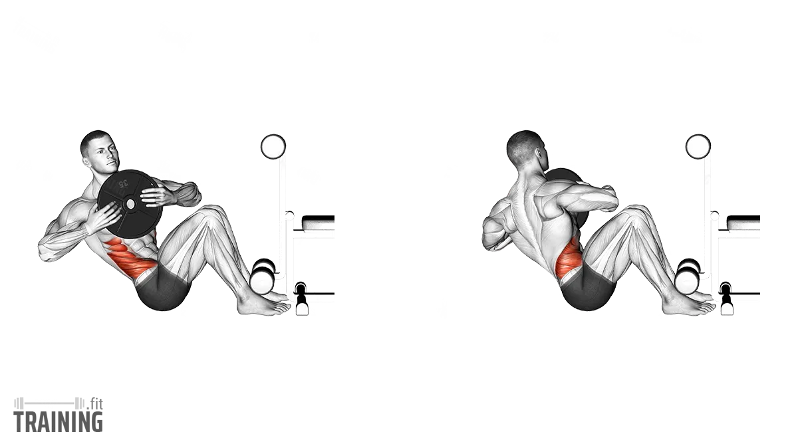

Exercise 01
Cable Crunch
A weighted ab exercise that mainly targets the rectus abdominis, the front "six-pack" muscles.

Form
- Kneel in front of the cable machine
- Hold the rope near your head
- Keep your hips mostly still
- Crunch your ribs toward your pelvis
- Slowly return to the starting position
Sets & Reps
Growth
3–4 × 10–15
Control
3 × 12
—
—
Tip: Do not just pull with your arms. Focus on curling your torso with your abs.
Fact: Cable crunches are great because you can progressively add weight, just like other muscle-building exercises.
Exercise 02
Crunches
A basic ab exercise that targets the upper portion of the rectus abdominis.

Form
- Lie on your back with knees bent
- Place your hands lightly behind your head
- Lift your shoulders off the floor by curling your torso
- Pause at the top
- Lower slowly back down
Sets & Reps
General
3 × 15–20
Endurance
2–3 × 20
—
—
Tip: Do not yank your neck with your hands. Keep the movement small and controlled.
Fact: Crunches use a short range of motion, but when done correctly they can still be effective for direct ab work.
Exercise 03
Hanging Knee Raise
Targets the lower abs, hip flexors, and also challenges your core stability.

Form
- Hang from a bar with your body steady
- Tighten your core
- Raise your knees up toward your chest
- Lower them slowly without swinging
Sets & Reps
Growth
3–4 × 10–15
Beginner
3 × 8–12
—
—
Tip: Avoid swinging your body. Start each rep from a dead stop if possible.
Fact: Hanging knee raises are harder than floor ab work because they force the core to stabilize the whole body.
Exercise 04
Leg Raise
A vertical leg raise variation that targets the lower abs and hip flexors.

Form
- Support yourself on the machine pads
- Keep your upper body stable
- Raise your legs or knees upward in front of you
- Pause briefly at the top
- Lower slowly with control
Sets & Reps
Growth
3–4 × 10–15
Beginner
3 × 8–12
—
—
Tip: Do not just swing your legs upward. Control both the lift and the lowering phase.
Fact: Leg raises generally place more tension on the lower part of the abs than basic crunches.
Exercise 05
Russian Twist
Targets the obliques and rotational core muscles.

Form
- Sit with knees bent and torso leaned slightly back
- Hold the weight close to your chest
- Rotate from side to side in control
- Keep your core tight and chest up
Sets & Reps
Obliques
3 × 12–20 total
Control
3 × 10–16/side
—
—
Tip: Rotate through your torso, not just by moving your arms.
Fact: Russian twists are one of the most common exercises for building stronger obliques and rotational control.
Best Abs Workout Order
For upper abs, lower abs, weighted work, and obliques:
Hanging Knee Raise — 3 sets
Leg Raise — 3 sets
Cable Crunch — 3–4 sets
Crunches — 2–3 sets
Russian Twist — 3 sets
This gives you upper abs, lower abs, weighted ab work, and oblique training.